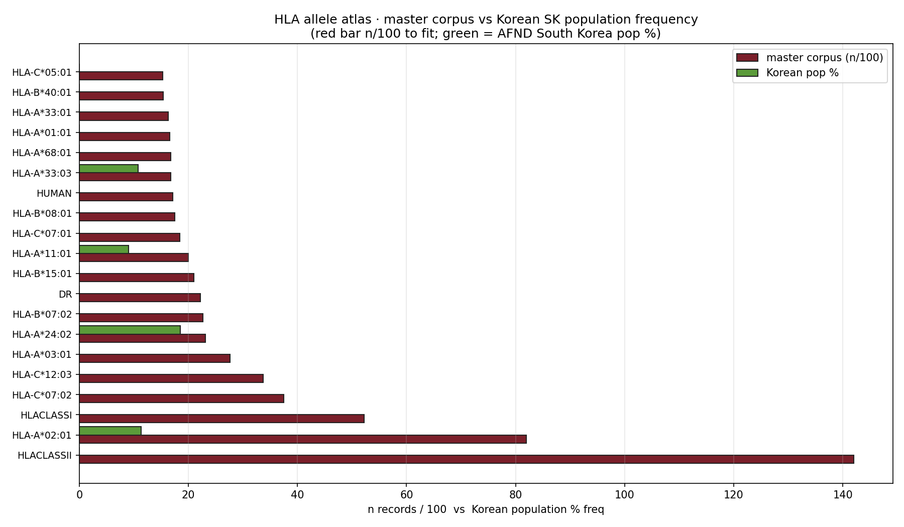

Per-HLA-allele coverage of the master corpus, with population frequency comparison (Korean SK + World) and per-allele Q-X analysis AUROC. Shows where the corpus is HLA-rich (A*02:01, A*03:01) and where it is sparse (A*24:02, A*33:03 = Korean common).

Figure · master corpus (red, n/100) vs Korean SK population (green, %). Korean A*24:02 allele frequency 18.5% but corpus has only 1.9% of records — 10× under-representation.
| HLA | master n | master % | Korean SK % | World % | under-rep flag |
|---|---|---|---|---|---|
| HLA-A*02:01 | 6,830 | 6.9% | 11.3% | 29.2% | slight (West-balanced) |
| HLA-C*07:02 | 3,268 | 3.3% | 7.0% | — | balanced |
| HLA-A*03:01 | 2,021 | 2.0% | 0% | 11.0% | n/a Korean |
| HLA-A*24:02 | 1,979 | 2.0% | 18.5% ★ | 11.0% | ★ 10× Korean under-rep |
| HLA-B*07:02 | 1,918 | 1.9% | 0% | 12.0% | n/a Korean |
| HLA-A*11:01 | 1,915 | 1.9% | 9.0% | 9.6% | 5× Korean under-rep |
| HLA-A*33:03 | 1,670 | 1.7% | 10.8% ★ | — | 6× Korean under-rep |
| HLA | n train+test | AUROC ± std | Korean common? | note |
|---|---|---|---|---|
| HLA-A*24:02 | 115 | 0.743 ± 0.027 ★ | YES (18.5%) | Best per-allele AUROC despite low n — Korean signal is strong |
| HLA-A*03:01 | 179 | 0.728 ± 0.028 | NO | 2nd best · World common |
| HLA-A*11:01 | 1,915 | ~0.7 (large n) | YES (9%) | large corpus + decent signal |
| HLA-A*02:01 | 884 | 0.633 ± 0.018 | YES (11.3%) | weakest of large alleles → corpus heterogeneity |